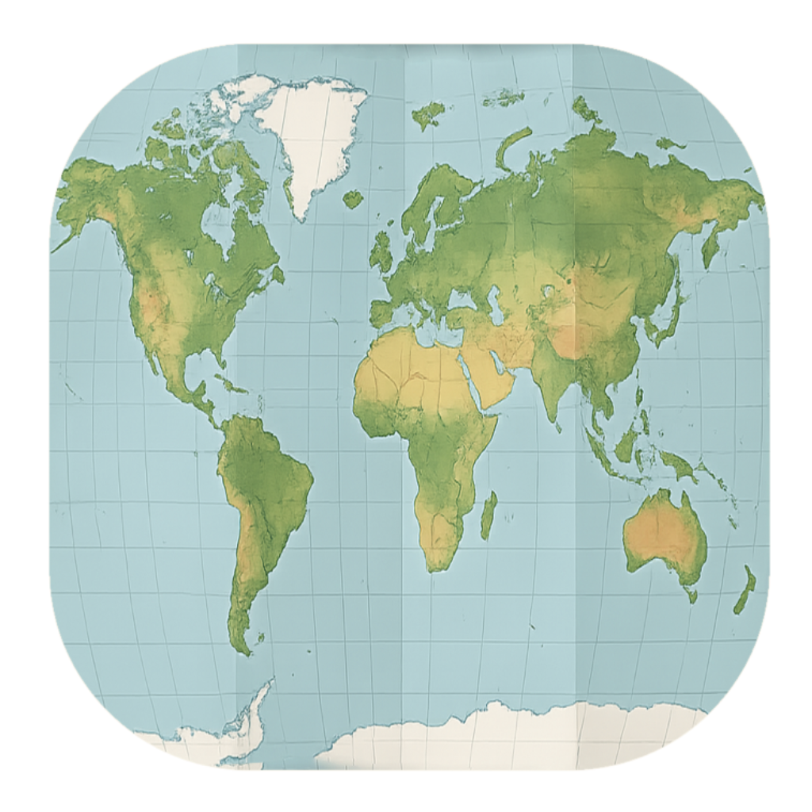

Requisiti minimi: macOS 13 Ventura • Apple Silicon
Utility per macOS che divide foto e video in base alla presenza dei metadati di posizione. Basta trascinare una cartella nell'app per separare rapidamente i media che contengono coordinate GPS da quelli che ne sono privi.
GPSDivider analizza i file contenuti in una cartella e li suddivide automaticamente in due nuove cartelle: una per i media che includono metadati di posizione e una per quelli che non li contengono.
In questo modo è possibile individuare rapidamente le foto e i video privi di coordinate GPS e aggiungere manualmente i metadati mancanti solo dove necessario.
Basta trascinare una cartella contenente foto e video nell'app. GPSDivider verifica per ogni file la presenza dei metadati di posizione e lo sposta automaticamente nella cartella corretta.
Al termine dell'analisi, l'app mostra quanti file sono stati inseriti nella cartella dei media con metadati di posizione e quanti nella cartella dei media senza metadati di posizione.
Versione: 19-04-2026
Scarica per macOSL'app non è firmata con certificato Apple. macOS bloccherà il primo avvio. Segui le istruzioni incluse nello ZIP per aprirla.